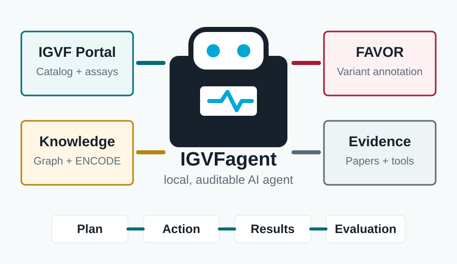
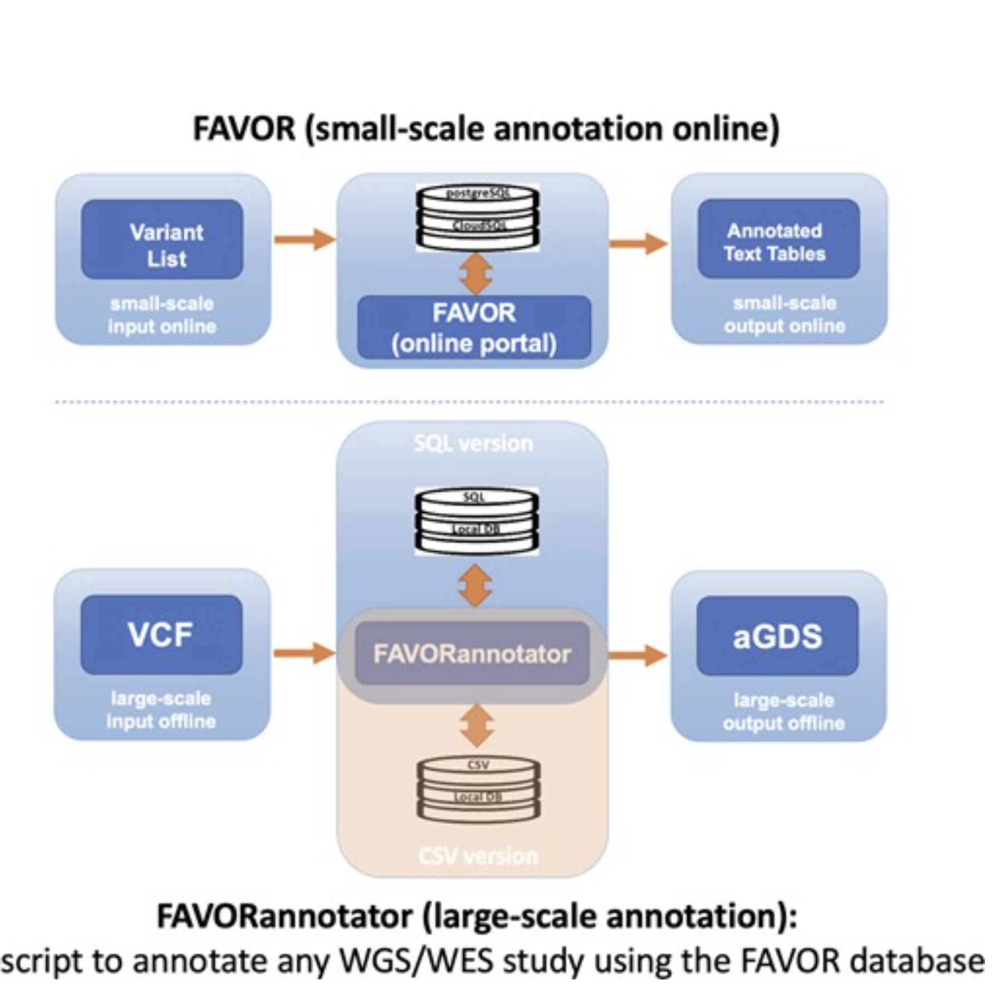
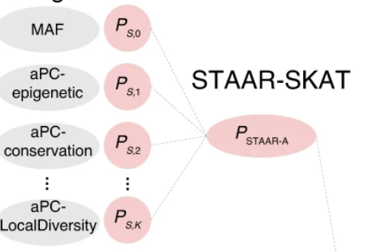
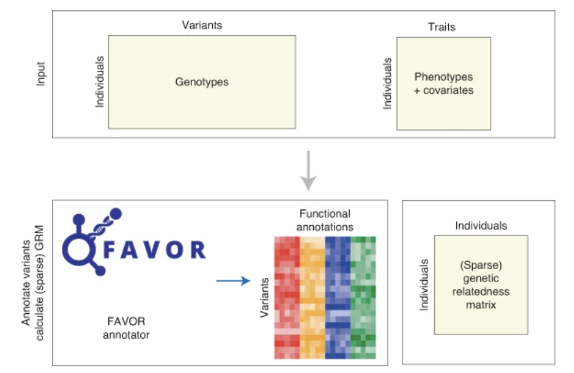
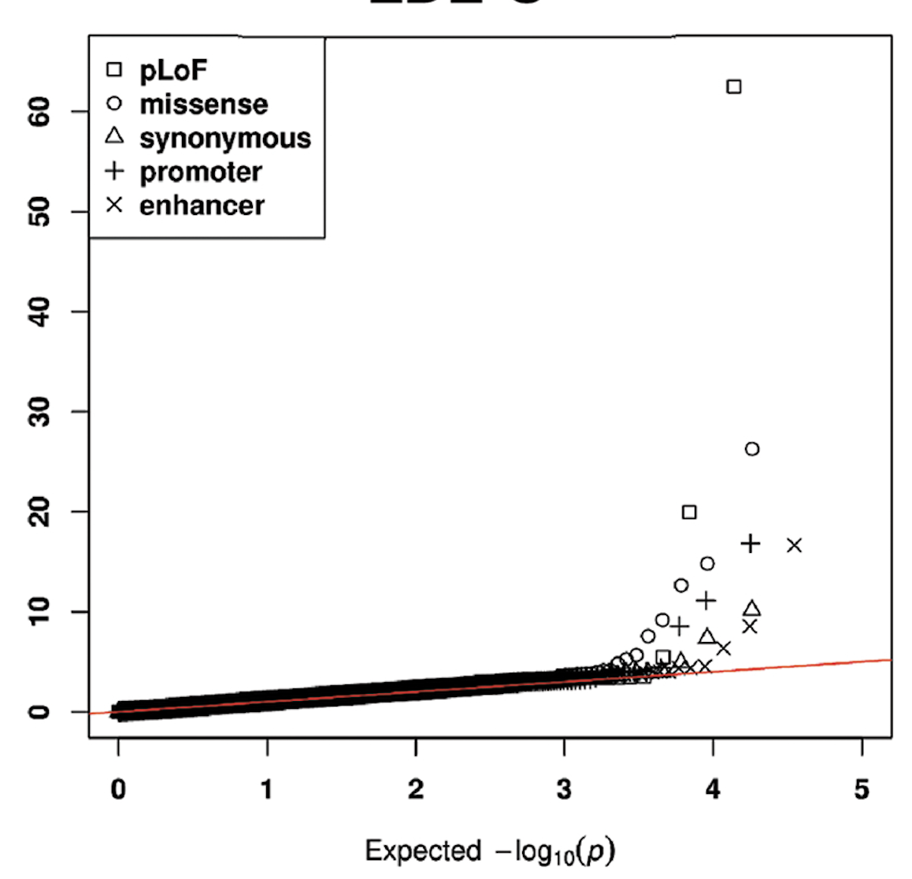
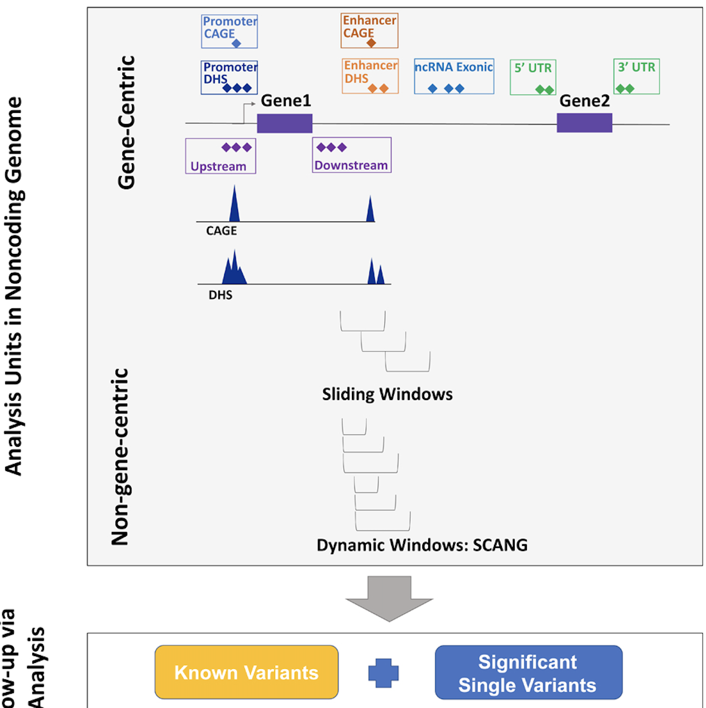
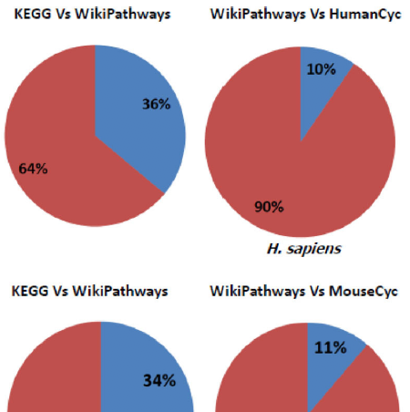
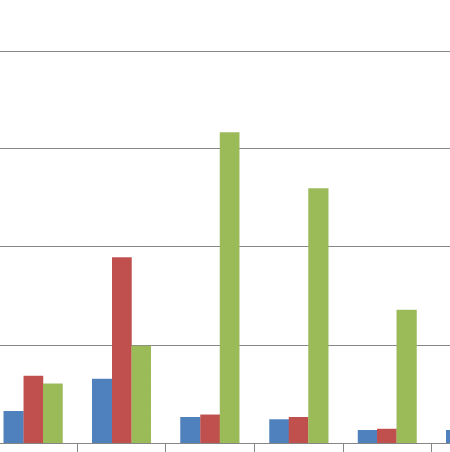

IGVFagent
A local, auditable AI agent for discovering, retrieving, and analyzing data from the IGVF Portal, Catalog, Knowledge Graph, ENCODE, FAVOR, and related public resources.
Learn moreTools and resources
Open and consortium-facing software for variant annotation, rare-variant association testing, pathway integration, and protein interaction analysis.
Portfolio
These tools support auditable AI agents, variant annotation, rare-variant association testing, pathway integration, and protein interaction analysis.

A local, auditable AI agent for discovering, retrieving, and analyzing data from the IGVF Portal, Catalog, Knowledge Graph, ENCODE, FAVOR, and related public resources.
Learn more
A reengineered annotation resource with expanded annotation scope, redesigned infrastructure, API support, updated visualization, and a generative interface.
Learn more
Annotation-informed rare-variant association testing for whole-genome sequencing studies.
Open resource
A scalable pipeline for coding, noncoding, gene-centric, and region-based rare-variant association analysis.
Open resource
Resource-efficient meta-analysis framework for rare-variant associations across large WGS and WES studies.
Open resource
Extensions for multi-trait rare-variant analysis and single-cell-informed testing of noncoding regions.
Learn more
Integrated pathway gene relationship database for model organisms and important pathogens.
Learn more
Computational prediction and evaluation of intra-species and host-pathogen protein-protein interactions.
Learn morePrinciples
For a job-market page, software is framed as a research contribution rather than a side project.
Handle whole-genome sequencing data, large cohorts, consortium meta-analysis, and annotation resources that exceed ordinary desktop workflows.
Use auditable agent loops, functional annotation, visualization, and searchable resources so variant-level results become biologically meaningful.
Package methods as tools, portals, and reproducible workflows that collaborators can adopt in real studies.